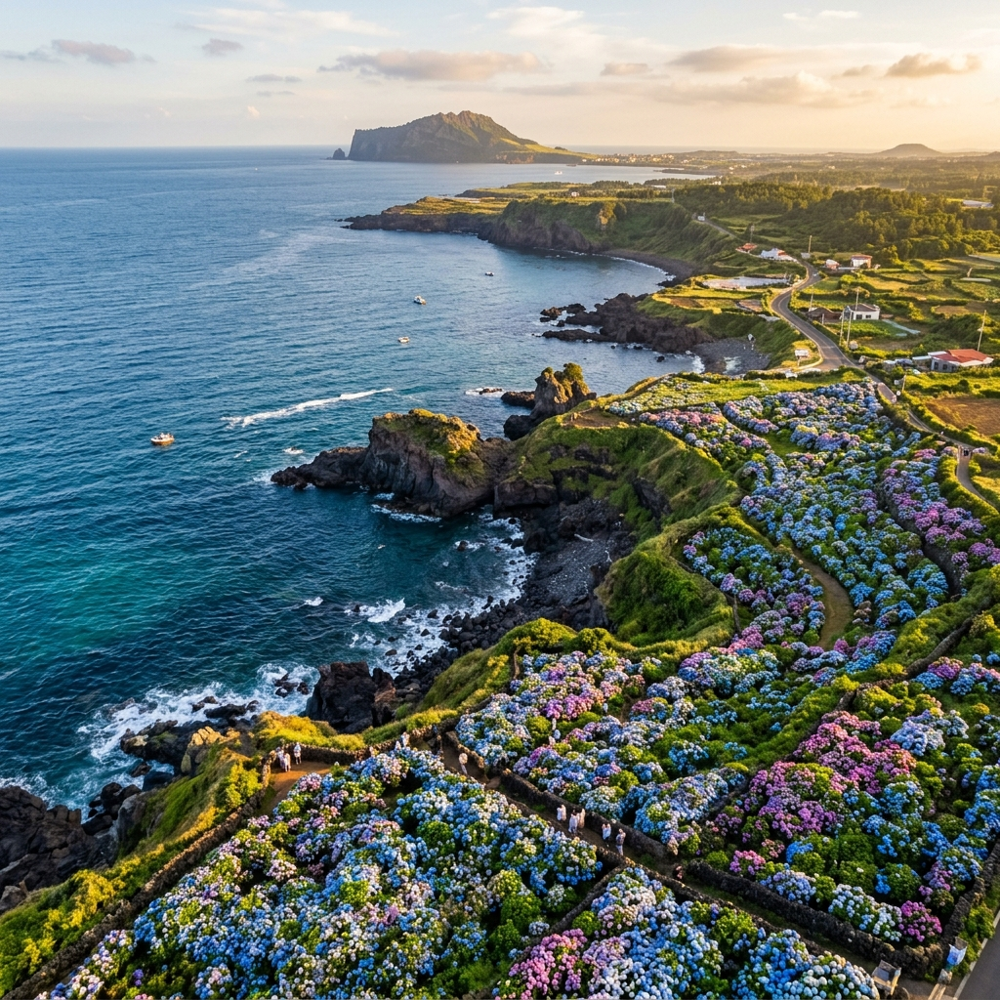
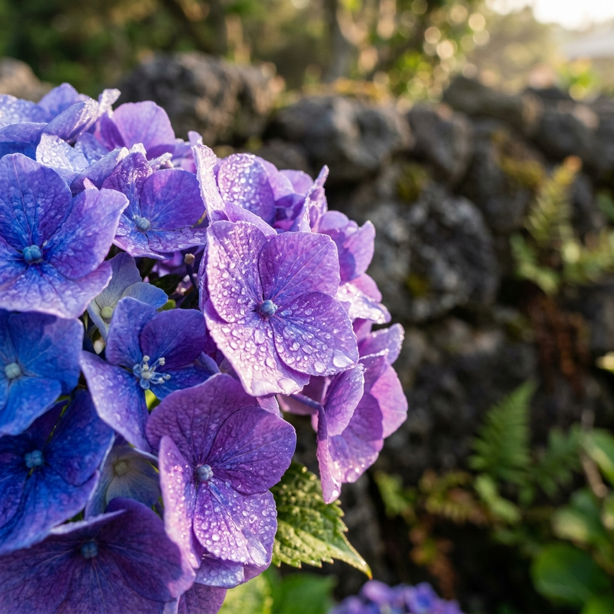
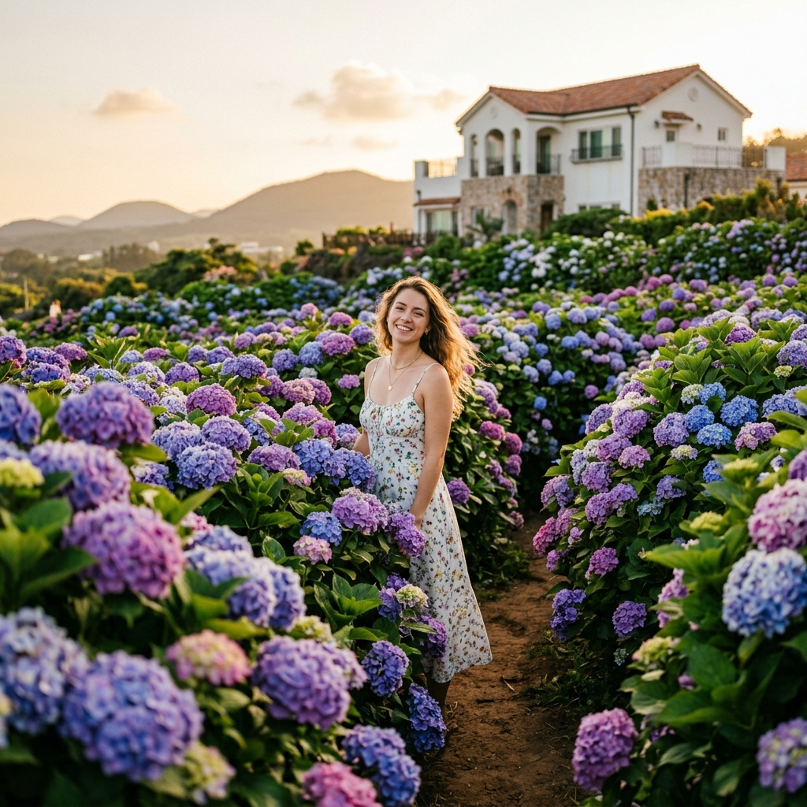

제주 수국 로드 2026: 동쪽 혼인지·종달리부터 서쪽 마노르블랑·휴애리까지 수국 명소 전수 비교 가이드
6월의 제주는 수국의 섬이 된다. 한라산 중산간부터 해안도로, 그리고 오름 기슭까지 — 파랑과 보라, 분홍이 뒤섞인 수국의 물결이 제주 전역을 덮는다. 2026년에도 수국 시즌이 어김없이 찾아오고 있다. 이 글에서는 제주 동쪽 혼인지·종달리부터 서쪽 마노르블랑·휴애리까지, 관광 전문가의 시선으로 각 명소를 정밀 비교한다. 입장료·개화 시기·주차 전략·이동 동선 최적화까지, 한 번의 여행으로 제주 수국 전부를 담고 싶은 독자를 위해 작성했다.
🌸 2026년 제주 수국 개화 시기 — 언제 가야 절정을 만나나
제주 수국의 개화는 일반적으로 6월 초부터 피어오르기 시작해 6월 중순~하순에 절정을 맞이하고, 7월 초까지 감상 가능하다. 다만 올해(2026년)는 기온 상승의 영향으로 전국적인 개화 시기가 약 1~2주 앞당겨지는 추세다. 제주 서남부에 위치한 마노르블랑의 경우 우리나라 최남단 입지를 살려 6월 첫째 주부터 만개 신호가 포착될 가능성이 높다.
수국의 색깔 변화도 주목할 포인트다. 수국은 토양의 산도(pH)에 따라 색이 달라지는데, 산성 토양에서는 푸른색·보라색 계열로, 알칼리성 토양에서는 분홍색·붉은색 계열로 피어난다. 제주 화산 토양의 경우 전반적으로 산성을 띠어 청보라 계열의 수국이 압도적으로 많다. 혼인지의 짙은 남색 수국, 종달리의 하늘색 수국, 마노르블랑의 다양한 컬러 수국이 이 차이를 극명하게 보여준다.
여행 계획을 세울 때는 네이버 수국 개화지도나 제주 관광청 공식 SNS를 출발 2~3일 전에 반드시 확인하길 권한다. 섬 특유의 미기후 때문에 같은 주에도 명소별로 만개 시기가 3~5일 차이가 날 수 있다.

6월 제주 수국 절정 시기의 해안 전경 / AI 제작 이미지
🗺️ 제주 동쪽 수국 명소 완전 정복 — 혼인지·종달리·현애원
제주 동쪽 코스는 서귀포시 성산읍과 구좌읍을 중심으로 이어진다. 성산일출봉이나 섭지코지 방문과 묶어 당일 코스로 소화하기에 최적이다.
① 혼인지 (서귀포시 성산읍 혼인지로 39-22)
제주 신화 속 탐라국 시조 을나(乙那)·양나(良那)·부나(夫那) 삼신인(三神人)이 하늘에서 내려온 세 공주와 혼례를 올렸다는 연못이다. 연못을 둘러싼 산책로 전체에 수국이 군락을 이루고 있어 '이야기가 있는 수국 명소'로 인기가 높다. 연못에 반영되는 수국의 물그림자가 포토그래퍼들의 단골 피사체다.
- 운영 시간: 매일 08:00~17:00
- 입장료: 무료
- 주차: 혼인지 전용 주차장 이용 (무료, 소형 30여 대 수용)
- 추천 방문 시간: 이른 아침(08:00~09:00), 인파 최소화 + 안개 분위기 연출
② 종달리 수국길 (제주시 구좌읍 종달리 일대)
성산에서 제주시 방향으로 달리다 종달리 마을 안으로 들어서면 갑자기 수국 터널이 나타난다. 이 길은 관광지가 아닌 진짜 마을 주민이 심고 가꾼 수국길이라 상업적인 분위기가 전혀 없다. 드라이브 코스와 자전거 코스로 모두 어울리며, 특히 해질 무렵 오렌지빛 노을에 물든 수국 사진이 SNS에서 수만 회 공유되는 명소다.
- 입장료: 무료 (마을 길 개방)
- 주차: 종달리 해변 공영주차장 이용 후 도보 이동 권장
- 주의사항: 주민 생활 구역이므로 소음·쓰레기 투기 자제
③ 현애원 & 이스틀리 카페 (서귀포시 성산읍 일대)
동백과 수국으로 유명한 정원형 명소다. 입구에 연결된 이스틀리 카페에서 수국 뷰 카페라테를 마시며 정원을 감상하는 코스가 인기다. 포토존이 잘 정비되어 있어 1인 여행객도 셀프 촬영이 쉽다. 대인 입장료 약 10,000원.
🗺️ 제주 서쪽 수국 명소 완전 정복 — 마노르블랑·휴애리
제주 서쪽·남쪽 코스는 서귀포시와 안덕면을 중심으로 전개된다. 중문 관광단지, 산방산과 묶는 2박 3일 코스의 핵심 명소다.
① 마노르블랑 (서귀포시 안덕면 일대)
우리나라 최남단에 위치해 수국 개화가 가장 빠른 곳이다. 지중해풍 건물과 수국이 어우러져 유럽 어딘가에 온 듯한 풍경을 연출한다. 성인 5,500원, 초등학생 이상 4,000원의 입장료가 발생하지만 정원 관리 상태가 우수해 여행 커뮤니티에서 '가성비 최상'이라는 평가를 받는다. 특히 흰색 건물 벽면을 타고 올라가는 핑크 수국은 마노르블랑의 시그니처 컷이다.
- 입장료: 성인 5,500원 / 초등학생 이상 4,000원
- 운영 시간: 09:00~18:00 (시즌별 변동)
- 주차: 전용 주차장 무료
- 팁: 개장 직후 또는 마감 1시간 전이 인파 최소
② 휴애리 자연생활공원 (서귀포시 남원읍)
13만 평 규모의 초대형 자연 공원으로, 수국 외에도 매화·벚꽃·황화코스모스 등 사시사철 꽃 이벤트가 이어진다. 수국 시즌에는 공원 중심부 수국 동산이 진보라색 물결로 물들어 가히 압도적이다. 물총새와 제주 조랑말 체험, 미니 동물원 등 아이 동반 가족 여행객에게 특히 추천하는 명소다.
- 입장료: 성인 13,000원 / 청소년 11,000원 / 어린이 10,000원
- 운영 시간: 09:00~19:00 (하절기 입장 마감 17:30)
- 주차: 전용 대형 주차장 무료
- 팁: 제주 삼다수 패키지 할인권(편의점 구매)으로 입장료 약 20% 절감 가능

제주 수국 클로즈업, 현무암 돌담과 어우러진 청보라 수국 / AI 제작 이미지
📊 동쪽 vs 서쪽 — 제주 수국 명소 한눈에 비교
| 명소 |
위치 |
입장료 |
개화 절정 |
특징 |
| 혼인지 |
동쪽 (성산읍) |
무료 |
6월 중순 |
전설, 연못 반영, 이른 아침 추천 |
| 종달리 수국길 |
동쪽 (구좌읍) |
무료 |
6월 중순 |
마을 생활도로, 자전거 코스 |
| 현애원 |
동쪽 (성산읍) |
약 10,000원 |
6월 중하순 |
동백·수국 정원, 카페 연계 |
| 마노르블랑 |
서쪽 (안덕면) |
5,500원 |
6월 초 (최남단) |
지중해풍 건물, 핑크 수국 |
| 휴애리 |
남쪽 (남원읍) |
13,000원 |
6월 중순 |
가족형, 13만 평 규모, 체험 다양 |
🚗 추천 이동 동선 — 하루에 수국 명소 2~3곳 소화하는 법
제주에서 동쪽과 서쪽을 같은 날 모두 소화하려면 렌터카가 필수다. 제주 공항에서 시계 방향으로 돌거나 반시계 방향으로 도는 루프형 코스를 추천한다.
[동쪽 집중 코스 (공항 기준 1일차)]
제주공항 → 성산일출봉 → 혼인지(08:00~09:30) → 종달리 수국길 → 점심 (세화 오일장 또는 성산 고기국수) → 현애원 → 섭지코지 석양
[서쪽 집중 코스 (2일차 또는 서귀포 숙박 기준)]
서귀포 숙소 → 마노르블랑(09:00 개장 직후) → 산방산 탄산온천 → 점심 → 휴애리(14:00~17:00) → 중문 관광단지 야경
💡 현지 꿀팁: 6월 주말 제주는 국내 최고 혼잡 관광지 중 하나다. 숙소는 최소 3주 전, 렌터카는 1~2개월 전 예약이 필수다. 성수기 렌터카 당일 예약은 '가격 폭등 + 차종 한정'의 이중고를 겪을 수 있다.
🍽️ 수국 명소 근처 음식 추천 — 제주 동·서 맛집 핵심 정리
수국 여행의 완성은 제주 로컬 음식이다. 제주 동쪽과 서쪽 각각에서 현지인이 즐겨 찾는 식당을 소개한다.
동쪽 추천
성산읍 일대는 제주 고기국수 명소가 밀집해 있다. 성산 포구 근처에서는 갓 잡은 한치와 전복을 이용한 해물뚝배기가 1만 원대에 제공된다. 혼인지 방문 후 성산 일출봉 인근 '성게 미역국 + 옥돔구이' 세트 정식은 제주 동쪽 여행의 정점이다.
서쪽 추천
안덕면과 중문 사이 서귀포 올레시장에는 제주 흑돼지 근고기와 갈치조림 전문점이 많다. 마노르블랑에서 남원 방향으로 이동하는 길목에는 제주 토종닭 백숙을 내는 향토 식당들이 분포해 있다. 서귀포 시내 대형마트 근처 '고등어회 + 맥주' 조합도 놓치면 아쉬운 제주 서쪽 미식 코스다.
📷 인생샷 건지는 촬영 팁 — 구도·시간대·설정값
수국 사진은 빛의 방향성이 결정적이다. 직사광선 아래 정오에 찍으면 색이 바래 보이고 잎사귀에 반사광이 생긴다. 최고의 촬영 타임은 두 가지다.
① 골든아워 (일출 후 1시간 / 일몰 전 1시간)
따뜻한 오렌지 빛이 청보라 수국과 색 대비를 이루어 놀라운 컬러 팔레트를 만들어 낸다. 혼인지와 종달리 수국길이 이 시간대에 특히 빛난다.
② 흐린 날 오전 (오버캐스트 조건)
구름 낀 날은 부드러운 산란광이 수국 전체를 균일하게 밝혀줘 색감이 훨씬 진하고 채도가 높게 담긴다. 마노르블랑과 휴애리처럼 규모 있는 수국밭 전경을 담을 때 효과적이다.
스마트폰으로 촬영할 경우 프로 모드 또는 수동 화이트밸런스 설정(3,200K~4,500K)으로 수국의 청보라색을 과포화 없이 살릴 수 있다.

제주 수국 정원 인생샷 구도 참고 / AI 제작 이미지
💰 예산 시뮬레이션 — 1박 2일 제주 수국 여행 총비용
제주 수국 여행의 총 비용을 실제적으로 시뮬레이션해 보자. 2인 기준, 서울 출발.
| 항목 |
예상 금액 (2인 기준) |
비고 |
| 항공권 (왕복) |
약 120,000~180,000원 |
제주항공·에어서울 기준, 3주 전 예약 시 |
| 렌터카 (2일) |
약 80,000~120,000원 |
소형차 기준, 유류비 별도 |
| 숙박 (1박) |
약 80,000~150,000원 |
게스트하우스~펜션, 성수기 가격 |
| 입장료 (마노르블랑+휴애리) |
37,000원 |
성인 2인 기준 |
| 식사 (4끼) |
약 80,000~100,000원 |
고기국수·해물뚝배기·흑돼지 포함 |
| 합계 |
약 397,000~587,000원 |
1인 기준 약 20~30만 원 |
⚠️ 주의사항: 6월 제주는 '극성수기'에 해당한다. 항공권·숙박 모두 수요 폭증으로 가격이 2배 이상 뛰는 경우가 있다. 5월 초 현재 기준으로 아직 6월 특정 주말 항공권이 70,000원대에 남아 있으나 매일 가격이 오르고 있다. 오늘 당장 검색해보길 강력 권장한다.
📅 2026년 제주 수국 시즌 달력 — 명소별 최적 방문 주 정리
| 시기 |
상태 |
추천 명소 |
| 5월 마지막 주 |
개화 시작 (마노르블랑 선두) |
마노르블랑 단독 방문 |
| 6월 1~2주 |
동쪽 개화 시작, 서쪽 절정 |
마노르블랑 + 휴애리 |
| 6월 2~3주 |
전도 수국 절정 |
혼인지·종달리·마노르블랑·휴애리 전체 |
| 6월 4주~7월 1주 |
막바지, 색 바래기 시작 |
혼인지 (산세 녹음 배경) + 휴애리 |
🔍 자주 묻는 질문 (FAQ)
Q. 수국이 언제 제일 예쁜가요?
A. 6월 2~3주차가 통계적으로 전도 절정. 출발 전 제주관광공사 공식 블로그 또는 네이버 수국 개화 알림을 통해 실시간 확인 권장.
Q. 아이와 함께라면 어디가 좋나요?
A. 휴애리 자연생활공원이 단연 추천. 조랑말 체험, 물놀이, 미니 동물원까지 아이들이 즐길 거리가 가장 많다.
Q. 혼자 가도 사진 잘 찍힐까요?
A. 마노르블랑의 포토존은 삼각대 거치가 자유로워 1인 여행객에게 최적이다. 종달리 수국길은 지나가는 현지인이나 여행객에게 부탁하기 쉬운 개방형 환경이다.
Q. 비 오는 날도 볼 만한가요?
A. 오히려 추천한다. 빗속의 수국은 꽃잎이 더 투명하게 빛나고 색감이 깊어진다. 단, 진흙길이 생기므로 방수 운동화 또는 장화 착용 권장.
#제주수국
#제주6월여행
#혼인지수국
#종달리수국길
#마노르블랑
#휴애리수국
#제주수국명소
#제주여름꽃
#수국개화시기2026
#제주여행코스